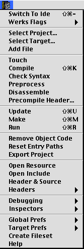

This is a help file for the "Code Warrior Menu" in Alpha. For Alpha to find
it, you must move this file to the "Help" folder located at the same level
as the Alpha application itself.
Introduction
This menu is designed to let you interact with the Metrowerks
CodeWarrior(tm) program. You can develop your C/C++ project in Alpha and
control most of CodeWarrior actions from within Alpha : compile, build,
run, preprocess, disassemble, export, touch, update, precompile, switch
between projects or between targets in a project, get all kinds of info and
much more without leaving Alpha.
Setting the menu
Alpha/CodeWarrior interaction does not need any setup beyond activating the
menu. The CodeWarrior menu can be added or removed as a global menu via the
menu item
"Config --> Global Setup --> Menus"
but the best way to use it is to link it to C and C++ modes so that each
time a file is opened in one of these modes the CodeWarrior menu is
automatically installed : to do this, switch to C or C++ mode and select
the menu item
"Config --> Mode Prefs --> Menus"
In the dialog window check the "CodeWarrior menu" checkbox. That's all
there is to it.Alpha's support is implemented entirely in Tcl, Alpha's macro language. The
code can be found in two files :
"codeWarriorMenu.tcl" and "codeWarriorCompletions.tcl".
The CodeWarrior menu items are explained below.
External Editor
CodeWarrior now has support for external editors. Metrowerks CodeWarrior
supports the notion of an "External Editor". To use Alpha as such:
- Create a folder called (Helper Apps) (with the curly braces) in the
same directory as the IDE if it does not already exist.
- Place an alias to Alpha in this {Helper Apps} folder. Call this alias
"External Editor".
- Check the "External Editor" flag in the Metrowerks preferences dialog
(IDE Extras panel). Alternatively you can set this flag from Alpha with the
corresponding flag 'Use External Editor' in the Werks Flags submenu.
Code Warrior projects
For the interaction to work correctly between your source files and
CodeWarrior, there must be a project opened in CodeWarrior and the source
file must belong to the project. There is a menu item called "Add File" to
add the currently opened source file to the current project. If you hold
the option key down this menu item becomes "Remove File" and lets you
remove the file from the project.
Several projects can be opened at a time : the interaction always takes
place with the frontmost one. You can easily switch between projects with
the "Select Project..." menu item. Within a project, you switch between
targets with the "Select Target..." menu item.
CodeWarrior menu always checks, when necesary, that a project is opened
or that your file belongs to the current target and warns you in case of
problem.
Errors
All of the functions that cause compilation to take place return any errors
in a window called "* Compiler Errors *". Individual errors can be selected
by using the up and down arrow keys. Return/Enter is used to bring up the
offending file at the correct line. Description of the menu items

- Switch To Ide
-
Switch to CodeWarrior app.
- Werks Flags
-
Specify compiling, building or linking options. Options available are :
| Build Before Running |
| Play Sound After Updt & Make |
| Save Open Files Before Build |
| Use External Editor |
| Activate Browser |
| Activate C++ Compiler |
| Enable Objective C |
| Enable C++ Exceptions |
| Enable RunTime Type Info |
| Generate Link Map |
| Generate Sym File |
| Invert Debugger |
| Switch When Compiling |
Note that the flag "Invert Debugger" was previously improperly named
"Enable Debugger": it acts in fact like a toggle. If you set this flag in
Alpha but the debugger is already enabled in CW, then this _disables_ the
debugger when you run your built project from Alpha : this is a feature or
a bug (?) resulting from the corresponding CW Apple Event (param DeBg).The "Save Open Files Before Build" flag is available since CW 6.
- Select Project...
-
Brings up a dialog with a list of all the open projects. The current
project is the one selected in the list: it corresponds to the frontmost
one in CodeWarrior. To switch to another target, select it and click OK.
- Select Target...
-
Brings up a dialog with a list of all the targets in the current project.
The current target is the one selected in the list. To switch to another
target, select it and click OK.
- Add File
-
Add current file to the current project.
When holding the option key down :
- Remove File
-
Remove current file from the current project.
- Touch
-
Declare frontmost window as modified in current target.
- Compile
-
Compile frontmost window.
When holding the option key down :
- Compile Files
-
Compile all windows in the same mode as the frontmost window.
- Check Syntax
-
Check syntax of frontmost window.
- Preprocess
-
Preprocess the current file : resulting window is opened in IDE.
- Disassemble
-
Disassemble the current file. This file must belong to a target in a
project and must have been compiled already. To edit the dump file in Alpha
open the CodeWarrior menu with the option key down. The "Disassemble" item
becomes "Edit Dump in Alpha".
When holding the option key down :
- Edit Dump in Alpha
-
The dump file resulting from a Disassemble command will be saved on disk
and opened in Alpha. Not available in versions of CW prior to 6.
- Precompile Header...
-
Prompt user for destination and compile frontmost window to destination.
Destination must already exist.
- Update
-
Update current project.
- Make
-
Make current project.
- Run
-
Run current project.
- Remove Object Code
-
Remove all compiled object codes from the current target.
- Reset Entry Paths
-
Reset the entry paths in the current project.
- Export Project
-
Export the project file as an XML file (not available in old versions of
CodeWarrior). The output file is named after the project file plus an
'.xml' extension. It is created in the same folder as the project file
itself. Not available in versions of CW prior 6.
- Open Resource
-
Open a resource file belonging to the project with the application which
created it (Constructor, ResEdit etc.) If there are several resource files,
the proc displays a picklist to choose one.
- Open Include
-
Open the file #include'd on this line (also can be invoked by
command-double-clicking).
- Header & Source
-
This item attempts to edit the header file corresponding to a particular
source file and vice-versa. It looks only in the same folder as the current
file (this should certainly be improved). It considers that a header file
has an extension starting with the letter h and a source file with the
letter c.
- Headers
-
This submenu allows you to set your own searching paths which will be used
by Alpha when attempting to open an included file.
- Debugging
-
- Go to Debugger
-
Launch the MetroWerks debugger (makes sense only for old versions of
CodeWarrior when the debugger was separate).
- Set Breakpoint
-
Set a breakpoint at the current line of the frontmost window.
- Clear Breakpoint
-
Clear a breakpoint at the current line of the frontmost window.
- Next Error
-
Display next error.
- Prev Error
-
Display previous error.
- Show in IDE
-
Open file in IDE and show the current line of the frontmost window in the
debugger.
- Edit Link Map
-
Edit the .xMAP file corresponding to the current target. The proc looks for
.xMAP files in the project's output folder and displays a picklist.
CodeWarrior produces a link map only if the 'Generate Link Map' flag is set
on. See the "Werks Flags" submenu above.
- Inspectors
-
- File Inspector
-
Brings info about the current source file.
- Target Inspector
-
Brings info about the current target.
- Project Inspector
-
Brings info about the current project.
- Link Order
-
Edit the list of all source files in the current project in the linking
order.
- Non Simple Classes
-
Edit the list of all non simple classes in a C++ project. This supposes
that your project has been built succesfully otherwise CodeWarrior won't be
able to return this piece of info.
- Class Info...
-
Brings info about a specific non simple class in a C++ project. This
supposes that the info is available in CodeWarrior which is not always the
case. The project must at least have been built succesfully. The info
returned is a list of base classes from which the specified class is
derived, of all data memebers and all member functions with their
properties.
- Class Browser...
-
Open in IDE a browser window about a specified class.
- Global Prefs
-
Each item in this submenu allows you to retrieve and edit (but not to set)
the global preferences chosen in the corresponding panel in CodeWarrior. To
get all the global preferences, choose the menu item "All Globals".
Available panels are:
| Build Settings | Layout Editor |
| Debugger Display | MetroNub Panel |
| Debugger Global | Plugin Settings |
| Extras | Shielded Folders |
| Font | Syntax Coloring |
| Global Source Trees | VCS Setup |
- Target Prefs
-
Each item in this submenu allows you to retrieve and edit (but not to set)
the target-specific preferences chosen in the corresponding panel in
CodeWarrior. To get all the target-specific preferences, choose the menu
item "All Panels". Available panels are:
| Access Paths | PPC Linker |
| Build Extras | PPC PEF |
| C-C++ Compiler | PPC Project |
| Custom Keywords | PPCAsm Panel |
| File Mappings | Rez Compiler |
| MacOS Merge Panel | Runtime Settings |
| Output Flags | Target Settings |
| PPC Disassembler | Target Source Trees |
- Create Fileset
-
Create a fileset containing all text files in the project currently opened
in CodeWarrior. See the 'Filesets Help' file for more info about filesets
in Alpha.
- Help
-
Edit this Help file.
Version History
- Original Author: Pete Keleher
- Improvements, updates, modifications by various authors : John
Dunning (jdunning@cs.princeton.edu), Jon Guyer (jguyer@his.com), Craig
Barton Upright (cupright@alumni.princeton.edu).
- 2001-10-11 - 1.3 - New features and enhancements by Bernard Desgraupes
(berdesg@easynet.fr)
- 2001-10-15 - 1.3.1 - Added items to disassemble and export to xml.
- 2001-10-20 - 1.3.2 - Added item to open resource file. Modified the
cw::header&Source proc to rely on file::sourceHeaderToggle and the Mode
Search Path mechanism. Added version checking for items not available in
older versions of CW.
Known problems
Please e-mail any problem or bug you encounter with this version 1.3 :
berdesg@easynet.fr
Visit my Web page for updates and other Alpha utilities :
http://webperso.easyconnect.fr/~berdesg/alpha.html
License and Disclaimer
Version 1.3 of CodeWarrior Menu.
Distributable under Tcl-style free license.
This software is provided by the copyright holders and contributors "as
is" and any express or implied warranties, including, but not limited to,
the implied warranties of merchantability and fitness for a particular
purpose are disclaimed. In no event shall the regents or contributors be
liable for any direct, indirect, incidental, special, exemplary, or
consequential damages (including, but not limited to, procurement of
substitute goods or services; loss of use, data, or profits; or business
interruption) however caused and on any theory of liability, whether in
contract, strict liability, or tort (including negligence or otherwise)
arising in any way out of the use of this software, even if advised of the
possibility of such damage.